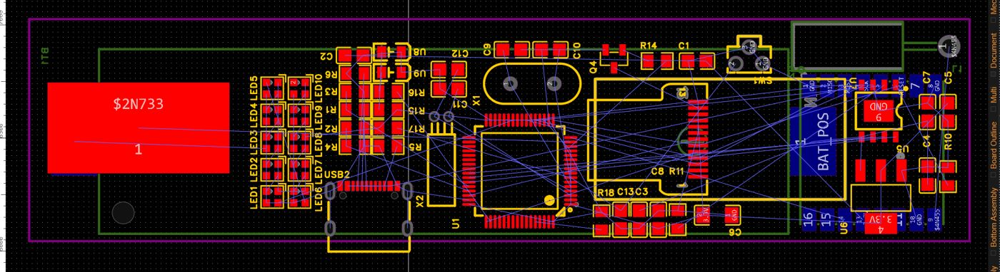
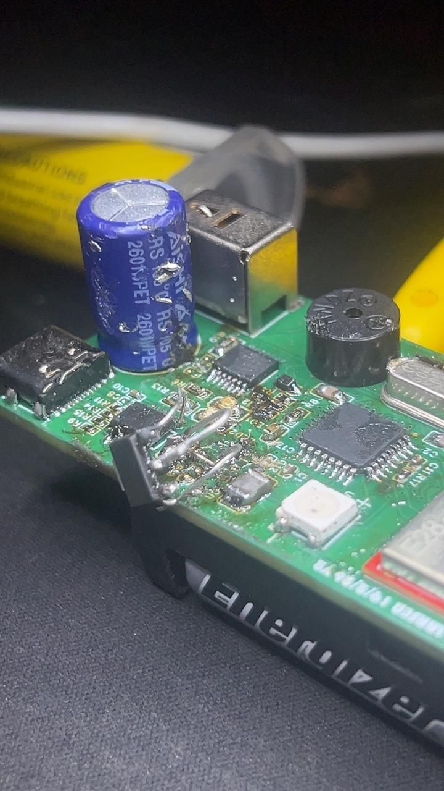
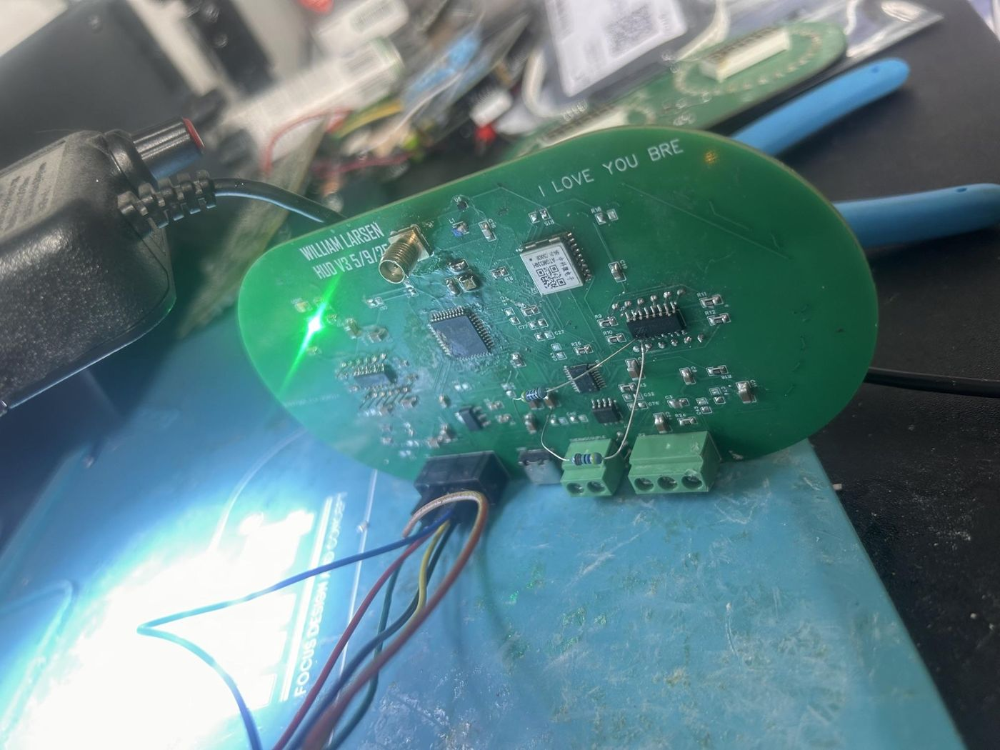
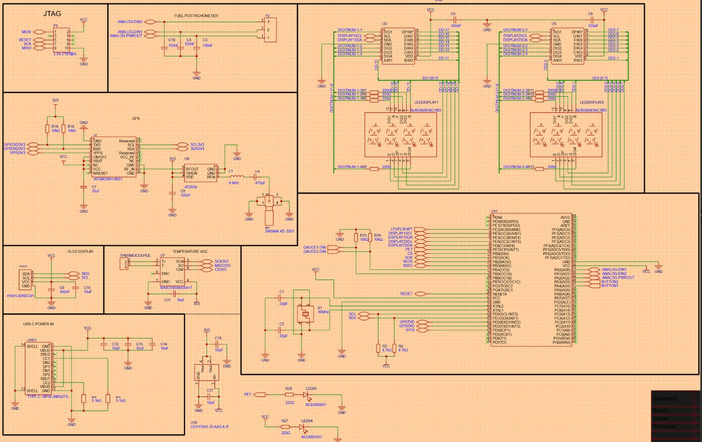
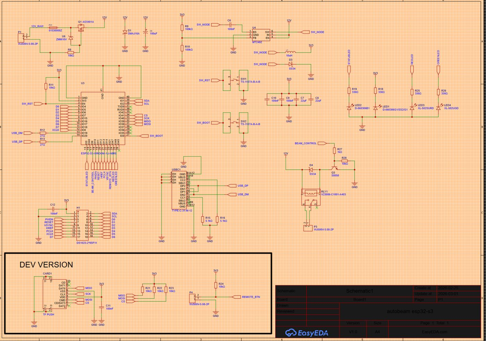
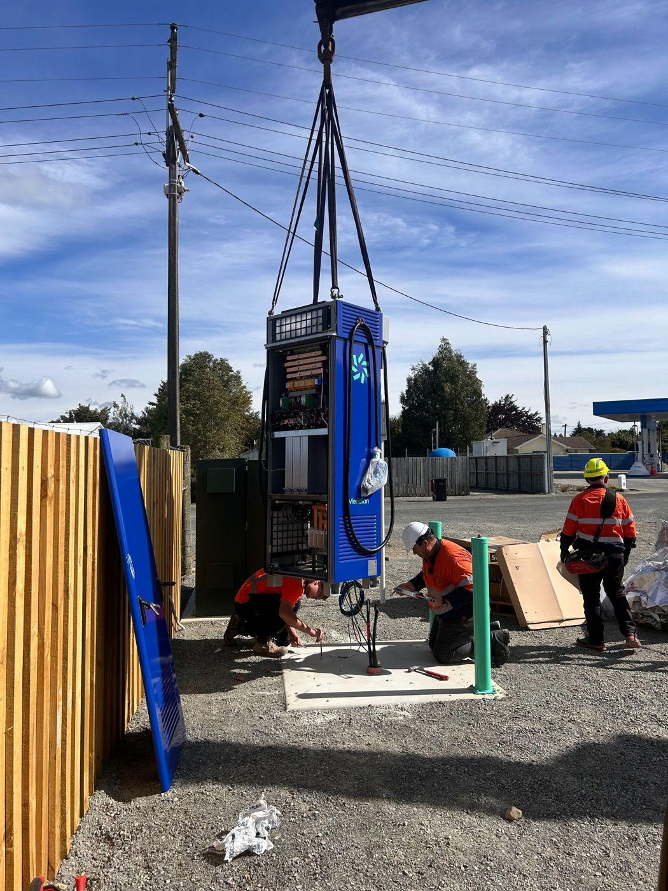

Registered electrician, Invercargill
I've been an electrician for six years. Outside work I design and build my own electronics. My bedroom is basically a workshop, and there's usually something half-built on the bench.
Below are the three projects I've put the most time into, plus some of my day-to-day work.
When you're isolating a circuit, you usually need someone at the plug yelling "it's still on" while you flick breakers at the board. This is a volt pen that sends a signal to a receiver, so you can do it on your own.
I designed the schematic and the board myself, and it's long and thin so it fits in a pen body. I've soldered every version by hand. The photo is the current prototype while I was testing a fix, which is why there are wires tacked on.


A gauge display for a car. You can wire in whatever sensors you want, like temperature, tacho or fuel, and it shows them on two digital displays.
It runs on an ATmega and has a GPS module with its own antenna amp and SMA connector. There's also a thermocouple input, screw terminals for the sensors, and USB-C power. This is the third board I've had made for it. Getting the GPS and displays working together took most of the debugging.


New cars dip their high beams automatically, and older ones don't. This uses a camera and a small neural network, which I trained in Edge Impulse, to spot oncoming headlights and switch a relay to dip the lights.
It's based on an ESP32-S3, with a 12 V buck converter so it can run off the car. I've parked it until the pen tester is finished.

I did a four-year ETCO apprenticeship and I'm now registered. At the moment I'm on the domestic and HVAC side, installing heat pumps around Southland. I price my own jobs, book them in and do the work. Over the years I've done rewires, switchboards, underground mains, and commercial and industrial jobs too.
I also spend a lot of time with the younger apprentices. I show them how to do something, then let them have a go.

willimobro@gmail.com
Happy to move to Auckland. Design files for any of these projects are available if you want them.